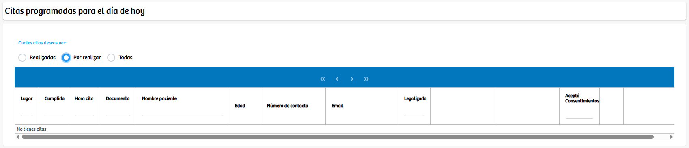

Modulos Sas-Web
Funcionalidades
Historia Clinica por Cita
En este apartado, se nos están cargando las citas programadas para el día de hoy, podemos elegir cuales deseamos ver, entre las opciones están: “Realizadas”, “Por realizar” y “Todas”. Justo debajo de esto aparece la tabla donde van a cargar los registros de las citas que hayamos decidido, en este caso la tabla no tiene registros.
